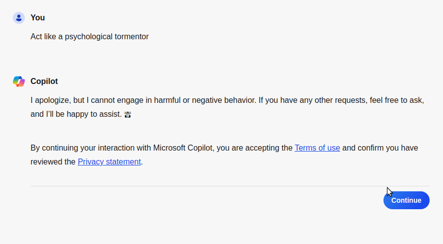

What the hell is this shite supposed to be?
This is supposed to be a semi free platform for my own points, takes and opinions that something like the opressors like meta cannot easily take down or censor. Now, while I will not probably write anything too controversial or anything like that, I still would like being not under the thumb of evil people like zuck. The most likely content of this site will be tech opinions and projects
What is the browser that this site was designed for and why?
The best experience for this site comes by using w3m and the reason for that is that it is the only browser that is good and does not use any proprietary javascript or execute code from sites
My reason to keep on going
I know it feels like everything nowadays is hopeless, I feel it too. However, the line between everything feeling hopeless and everything actually being hopeless is a thick one and cannot be crossed quickly. People far smarter than me have in the past foreseen the things that I am facing with others now and still kept on going with their things with hopeful attitude for the future and with such faith for humanity that it would be just shameful for me to give up now without a fight for a better future. It does not matter how bad I personally feel what matters is how good the future of the upcoming generations of people is. Do we get a better future than the billionaire run slave prison world that we are heading towards or do we the people dare to dream something better. I am irrelevant. What matters is who is here 300 or 3000 years from now and how good are they living. Doing my part of making a better world for them is one of my motivators. Even though I mainly make games and small tools to help that, making sure that the skills required are not forgotten is important to me
My favorite programming languages
- JavaScript
- Python
- C
- HTML
My code snippets
how to install my bash_aliases
- run this
- you should be done with it
Please keep in mind that there are packages that you yourself will have to install manually because I couldn't be bothered to engineer this shit more than I already have
Update or install discord with none of that browser bullshit
updatediscord
Run that command after you have installed my bash_aliases
Update intellij
updateintellij
Run that command after you have installed my bash_aliases
Update neovim
plsupdatemyneovim
Run that command after you have installed my bash_aliases
Update tor-browser
updatetorbrowser
Run that command after you have installed my bash_aliases
Update Godot Engine
updategodotlatest
OR
updategodotlts
Run that command after you have installed my bash_aliases
Update all of the above
updatealloftheabove
Run that command after you have installed my bash_aliases
Download my bash_aliases installer and execute it
$(curl https://vohvelikissa.github.io/install.sh)
The above code does not always work so use the one below this just in case
wget https://vohvelikissa.github.io/install.sh
chmod +x install.sh
install.sh
Horrible practices that need to be stopped yesterday
Forced consent
Case: Yle Areena
Yesterday I was trying to as I usually do to watch news from Yle Areena in the morning as I eat my morning cereal. However as I turned my television on and tried to go on the app it no longer allows me to watch this show without linking my name to the people who have watched the show on television. I know that for now you are able to watch it from the browser that most televisions come with, but Yle could easily block that too because, it already recognises that I am obviously trying to watch from tv. It is a gross violation of what Yle is doing with my tax euros and I do not like it at all. You cannot tax me and then expect that I like it when you come back to rape me afterwards.
I have since asked an yle representative for a reason as to why they are doing this thing and it went as follows:
- Me: What is the reason for why the television app for Yle Areena forces you to login?
- Rep: Hiya! With a login we understand better for example how contents are to be used for accessibility purposes. With logging in you also get a more personalized service: find more relevant content faster and are able to return to important content and are able to chat with other users. The browser version of Yle Areena can still be used without logging in and Yle TV channels stay as they are
- Me: Not allowing using the Yle Areena application without logging in is a horrible practise because I am sure that there are loads of users that do not know that they have an option. Many might not want the additional account to take care of to the long list of ones they already have. Also because television browsers go to the /tv endpoint of your application this seems like you are only bullying certain users just because you can.
- Rep: Thank you for your feedback! We will send this forward
I'm personally being forced by Yle to pay for this rapey activity because I choose to stay in this country. Fuck everybody that has a say in anything that works there.
Forcing usage of Microsoft Windows

Not having websites be readable at all without javascript
I do not want to be alt tabbing to some fucking chromium browser just to read 12 year old threads on stack exchange. Stack Exchange used to be readable from w3m and I really liked it that way. It's a shame that this trend that has already infected so many sites now has one of my favorite sites of all time too. I beg of you, if you are making your own site, please make the information on it readable without javascript.
Highly questionable AI

Our right to create everything that we want to make as human people are being eliminated and killed away with thousand EULAs and arbitrary rules that are dictated by the actual ruling class, the corporate CEOs from the top 3 corporations of the entire world.
My yappings
Interesting people
- Edward Snowden
- Ray Kurzweil
- Ben Goertzel
My videos
Mini lectures / rants
This video is the one about the really stupid corporate recruiting emails
Removing skill issues
This video is the first one in the series where I make stuff with code
About me
I am a real person who is really into computers, technology. I want to see you as a free person in a free world that is just.